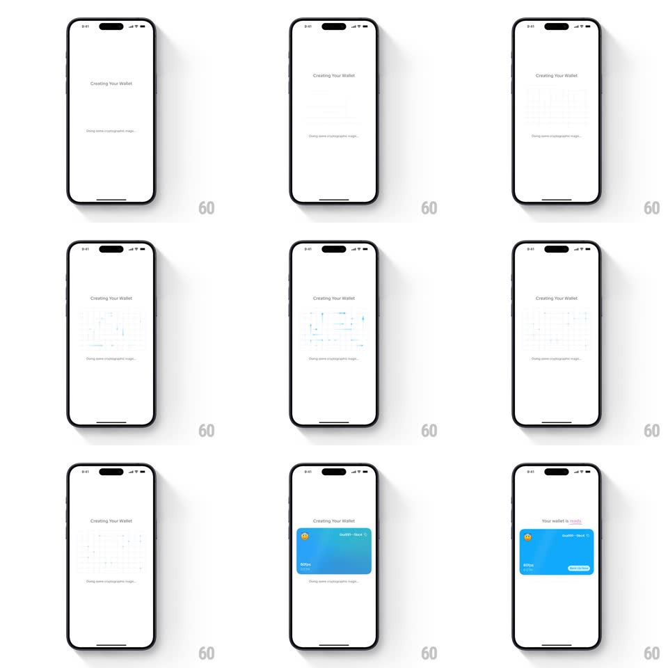

Media
Frame-by-frame

Rebuild this interaction 1:1: Family's wallet-creation sequence - under "Creating Your Wallet", a faint cyan cryptographic grid materializes and shimmers, then a blue wallet card slides up with a springy entrance, snapping into place with the wallet name and balance.

Rebuild this interaction 1:1: Family's wallet-creation sequence - under "Creating Your Wallet", a faint cyan cryptographic grid materializes and shimmers, then a blue wallet card slides up with a springy entrance, snapping into place with the wallet name and balance.
## Integration
Integration: stack-agnostic spec - springs given as stiffness/damping, timed motions as duration + curve; map every value to your framework and animation library of choice.
## Scene
White screen: "Creating Your Wallet" title, a status line ("Doing some cryptographic magic..."), and a blue rounded wallet card (wallet name, ETH balance, avatar chip) that arrives after the crypto-grid interstitial.
## Motion spec
Pattern: shimmer interstitial resolving into a springy card entrance.
- The title fades in first (300ms); the status line follows (200ms).
- A faint cyan grid of connected nodes/lines draws itself in the center (opacity 0 -> 0.6, line segments tracing on, ~900ms) and shimmers (opacity pulsing 0.4 -> 0.7, 1.4s loop) while the wallet "computes".
- The grid dissolves (opacity + scale 0.95, 300ms) as the wallet card slides up from below (translateY 60px, spring ~340/22, 420ms) and fades in.
- The card settles with a soft bounce; its contents (name, balance) fade in 100ms after the card lands.
## Calibration
- The grid is faint and technical - a placeholder for computation, never the focus.
- The card entrance is the payoff: one confident spring, no wobble after.
## Reduced motion
Grid fades in/out; card fades in at final position (300ms).
## Don't miss
- The grid and card never overlap - dissolve completes before the card rises.
- The status line stays visible through the grid phase, anchoring what is happening.